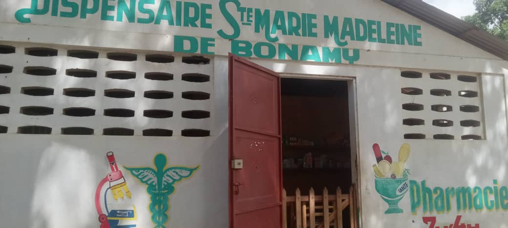
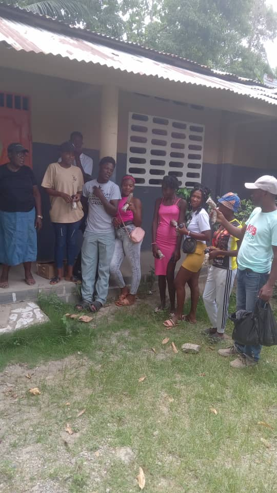
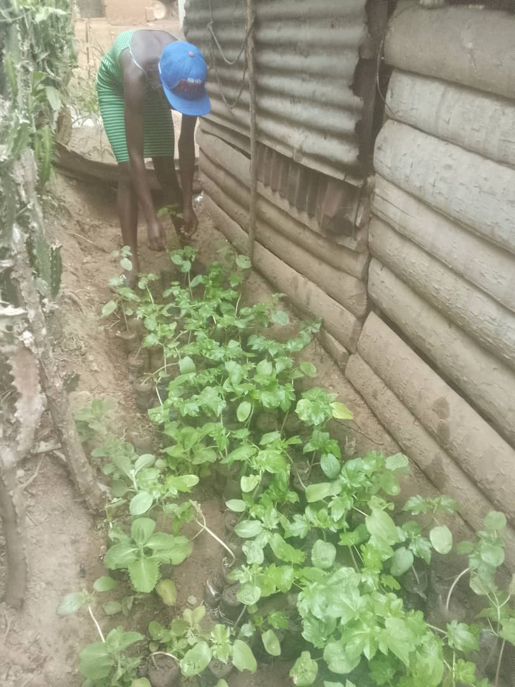

Les personnes qui font KONKRET
Daniel Tillias a fondé KONKRET en 2011 à Milot avec une mission simple : utiliser la terre pour créer du travail pour la jeunesse haïtienne. CNN Hero 2019, Daniel a construit en 14 ans un réseau coopératif actif dans 3 régions du nord d'Haïti. Il dirige aujourd'hui KONKRET, SAKALA, et le programme Grand Bassin en partenariat avec BARSS.

Les profils complets de notre equipe seront publies prochainement.

Profil a venir
Profil a venir
Profil a venir
KONKRET est gouvernee par un conseil d'administration dont les membres sont engages dans la mission de l'economie solidaire haïtienne. Les decisions collectives guidant notre organisation refletent les principes cooperatifs qui nous fondent depuis 2011.
Informations a venir. Pour toute demande de gouvernance ou d'audit institutionnel, utilisez le formulaire de contact.
Nous Contacter
Reconnaissance Internationale
Daniel Tillias, CNN Hero 2019
Reconnu internationalement pour son travail avec la jeunesse haïtienne